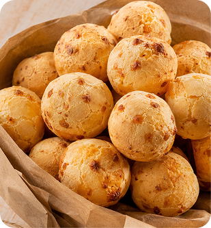
Pão de Queijo Tradicional
Nosso produto mais vendido, feito com queijo parmesão.
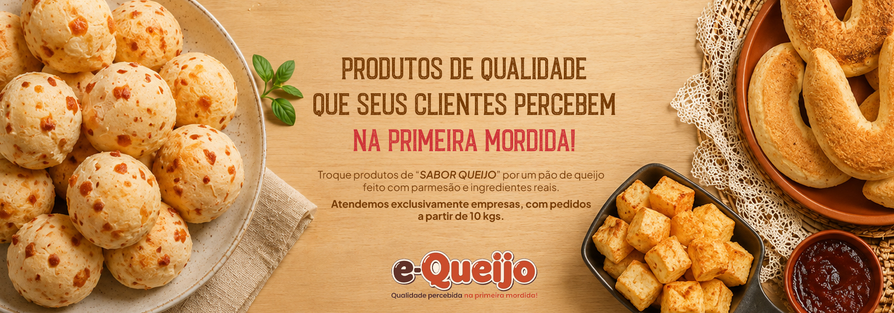
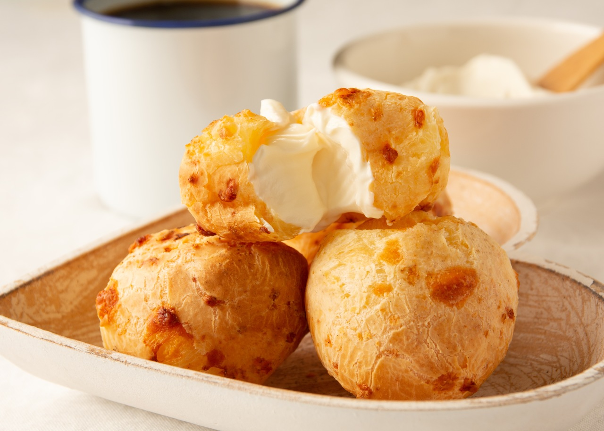
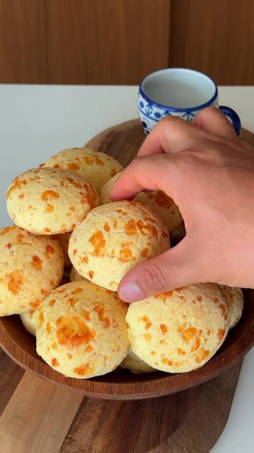
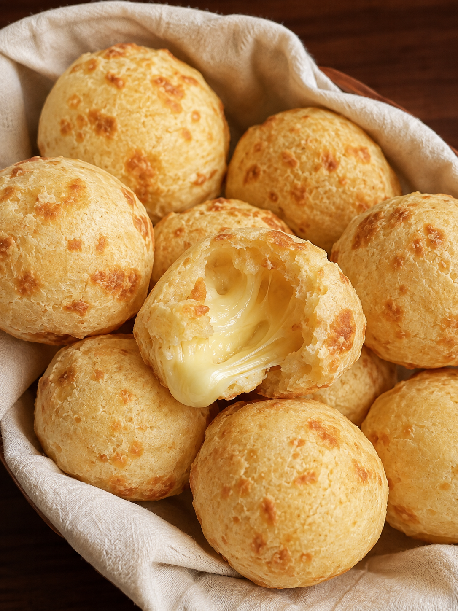
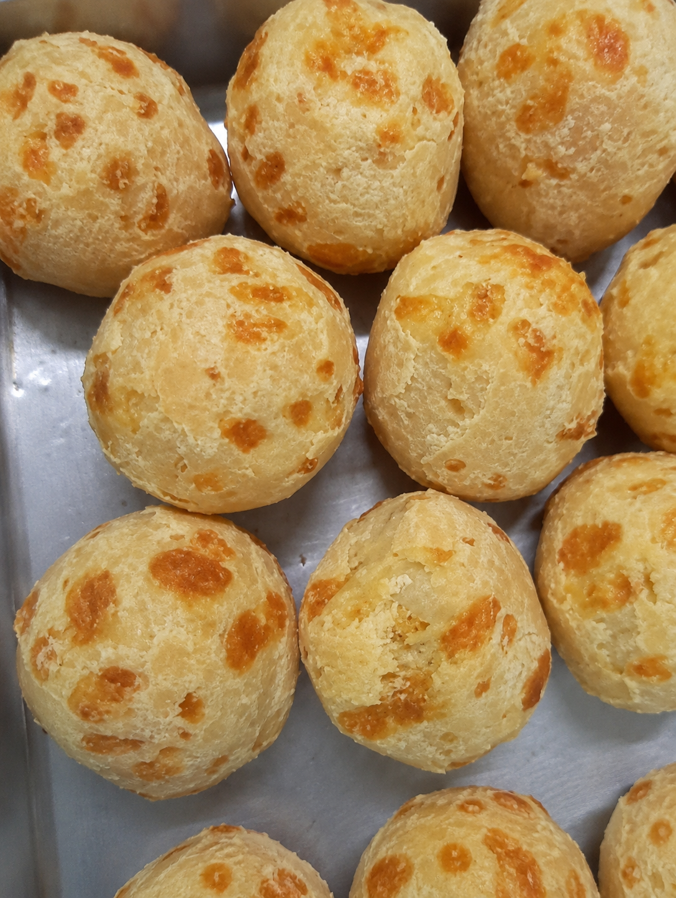
Atendemos exclusivamente o mercado B2B.
Pedidos mínimos a partir de 10 kgs.
Chamar no WhatsAppNada melhor do que ver o resultado na prática. Nossos clientes percebem a diferença no tamanho, na textura e naquele pão de queijo que cresce e fica irresistível depois de assado.
Chamar no WhatsApp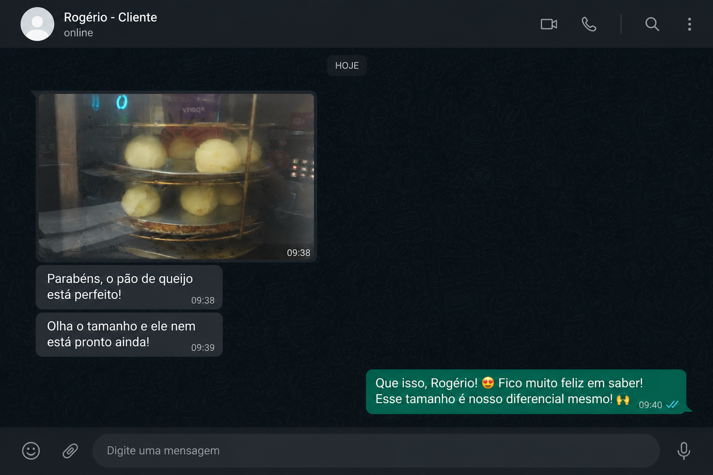

Nosso produto mais vendido, feito com queijo parmesão.
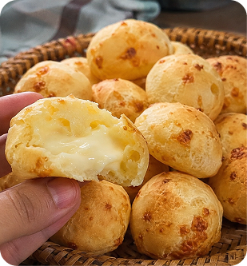
Mais sabor e variedade para o seu negócio.
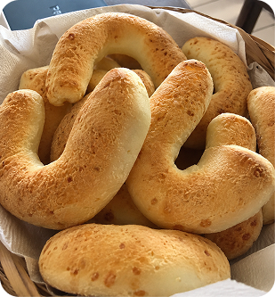
Uma receita diferenciada para ampliar seu mix.
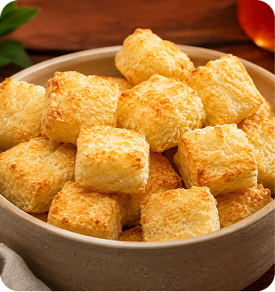
Mais uma opção para diversificar seu cardápio.
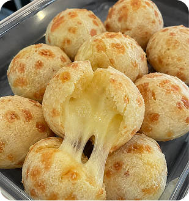
Empanado com queijo parmesão: uma explosão de sabores.
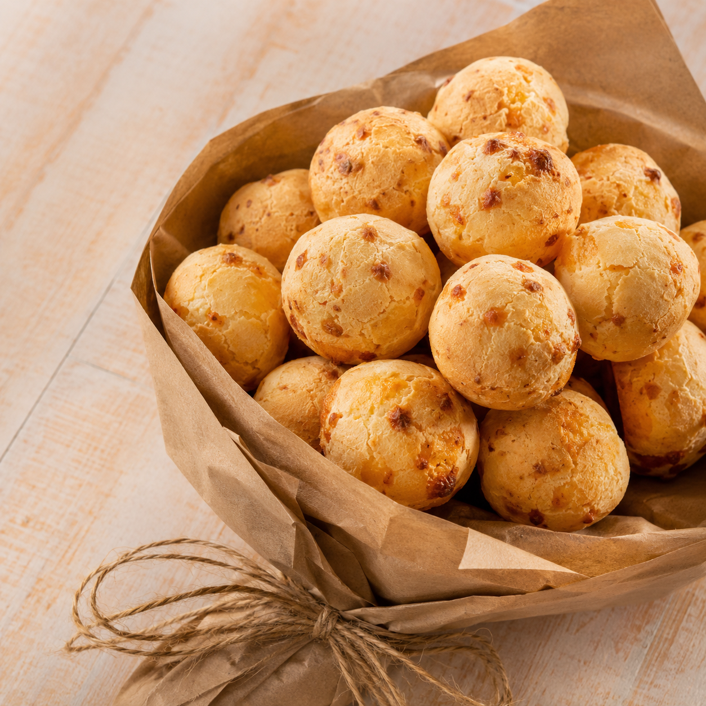
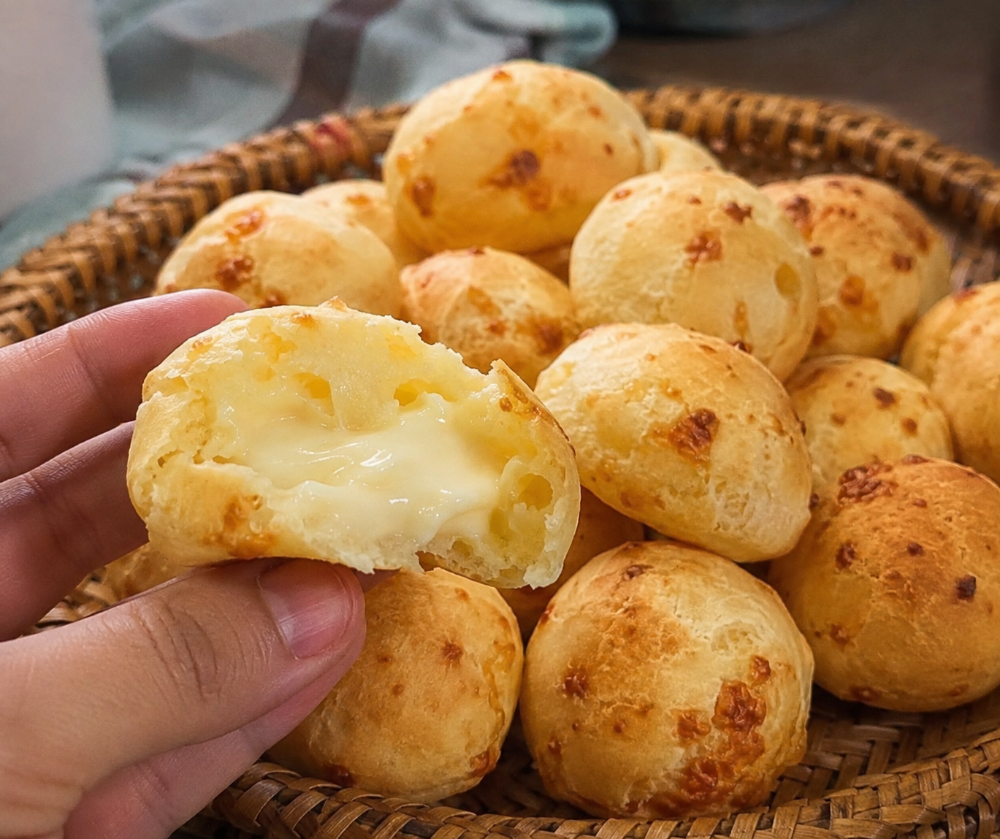
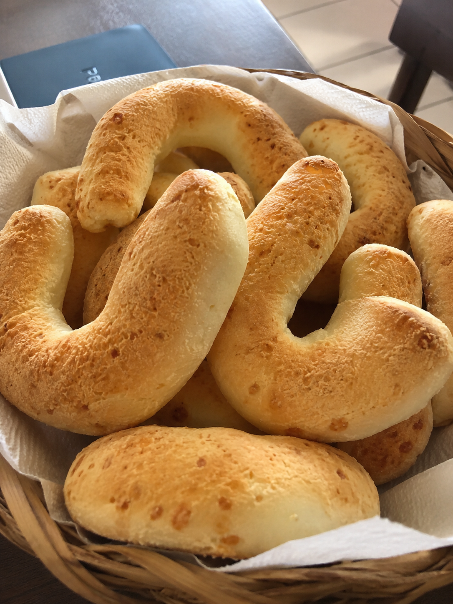
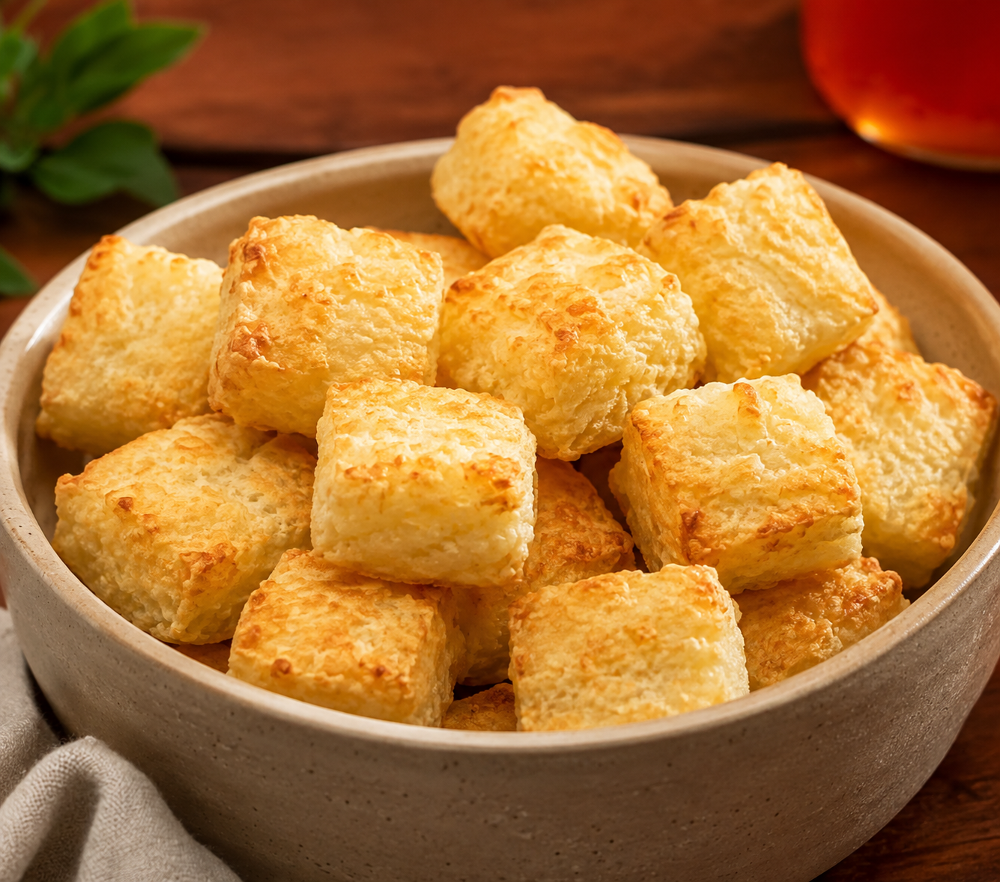
Solicite um contato comercial e descubra como a e-Queijo pode abastecer sua empresa com produtos de alta qualidade!
Chamar no WhatsApp